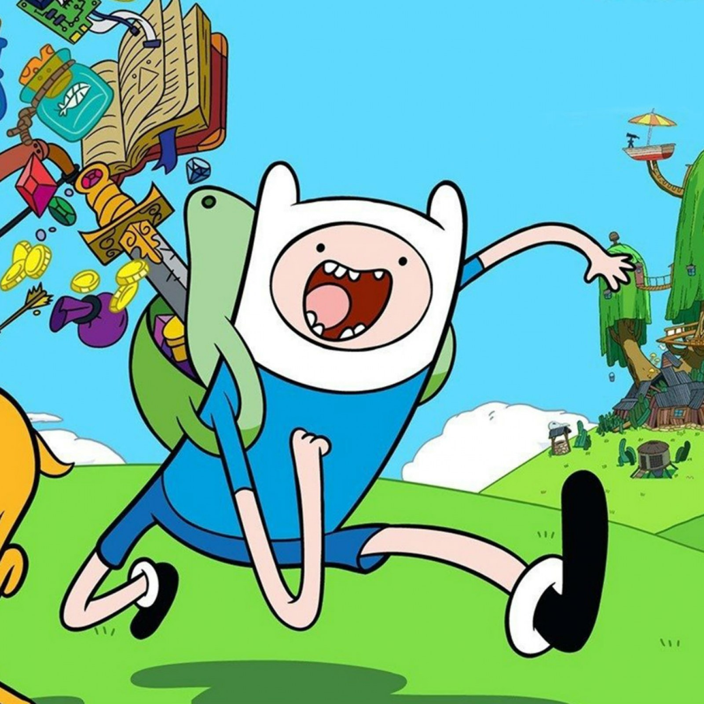

Finn é um garoto humano de 17 anos, que junto com seu irmão Jake, vive procurando aventuras pela Terra de Ooo, salvando as pessoas de perigos e seres do mal. No início da série Finn tinha cerca de 1,50 de altura, Seus olhos, embora careçam de detalhes e apareçam como pequenos pontos pretos devido ao estilo de arte da série, são azuis, Finn usa um chapéu com duas orelhas saindo por cima. O chapéu é inspirado em um antigo personagem de Pendleton Ward, Bueno, um urso branco. Ele também usa uma camiseta azul-claro, um short azul escuro, uma mochila verde circular, meias brancas enroladas para baixo, e um par de sapatos pretos. Finn tem grandes cabelos loiros, herdados da sua mãe.